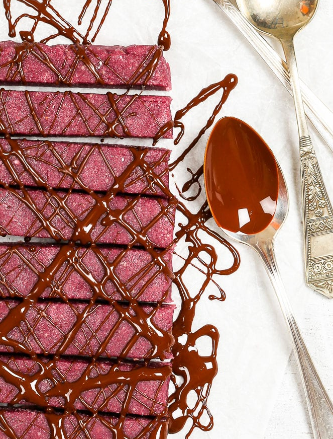

Barritas energéticas de frambuesa y chocolate
Estas barritas energéticas frambuesa y chocolate son un snack saludable perfecto: prácticas, nutritivas, saciantes y absolutamente deliciosas. Son súper fáciles y rápidas de hacer, sólo requieren 7 ingredientes y 10 minutos. Si estás buscando un snack para la tarde o después del entrenamiento: ¡esta receta es perfecta para ti!

Ingredientes:
Barritas de frambuesa
- 2 tazas (210 g) de frambuesas congeladas
- 3/4 taza (115 g) de anacardos
- 3/4 taza (115 g) de almendras blanqueadas
- 1/8 taza de sirope de maple
- 1 1/2 cucharada de aceite de coco derretido
- 3 - 4 cucharadas de harina de almendras o coco
- 2 1/2 oz (75 g) de chocolate amargo, derretido con 1 cucharada de aceite de coco
Topping de chocolate
- 2 1/2 oz (75 g) de chocolate amargo, derretido con 1 cucharada de aceite de coco
Preparación:
#Barritas de frambuesa
- Para hacer la reducción de frambuesa: en una cacerola pequeña, cocina las frambuesas a fuego medio-alto hasta que suelten su jugo y parte del líquido se haya evaporado. Pasa la mezcla de frambuesas por un colador para quitar las semillas y la piel. Regresa el jugo de frambuesa a la cacerola y cocina más hasta que haya disminuido en volumen a aproximadamente 1/8 - 1/4 taza. Dejar enfriar.
- En una licuadora o procesador de alimentos, mezcla los anacardos y las almendras blanqueadas.
- Agrega la reducción de frambuesa, el sirope de maple y el aceite de coco y mezcla hasta que todo se una. Ajusta la dulzura a tu gusto.
- Si la mezcla es demasiado blanda y/o húmeda, agrega un poco de harina de almendras o de coco hasta que la mezcla ya no se pegue a los dedos.
- Moldea la mezcla de barra energética de frambuesa en un rectángulo, envuélvelo en un film transparente o papel de aluminio y refrigeralo durante aproximadamente 1 hora.
- Una vez que la mezcla esté sólida y firme, corta el "bloque" de frambuesa en barras individuales.
Topping de chocolate
- En un recipiente apto para microondas agrega el chocolate amargo y 1 cucharadita de aceite de coco. Derrite el chocolate dentro del microondas por 30 segundos y mezcla bien (es posible que debas ponerlo al microondas varias veces) hasta que el chocolate esté completamente derretido y suave. Otra opción es derretirlo a baño maría en una cacerola a fuego bajo, cuidando de revolver bien y que no caiga agua al chocolate, ya que puede cortarse.
- Vierte el chocolate derretido sobre las barritas según sea tu gusto.
Guardado:
- Las barritas se conservarán bien en un lugar fresco y seco durante 3 o 4 días, y en el frigorífico durante aproximadamente 1 semana.